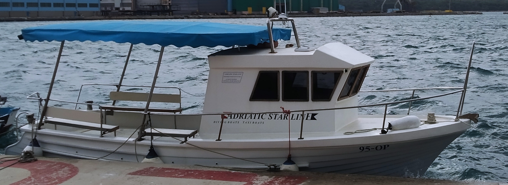
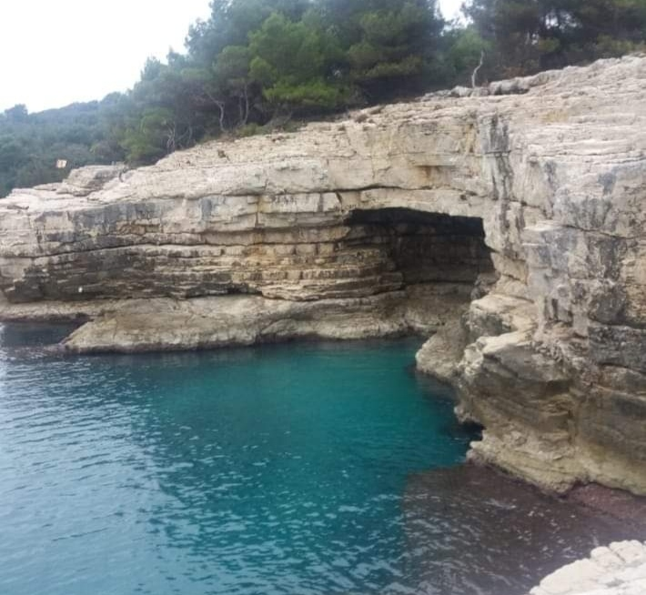

Cave swimming tour in Pula
Cruise along the cliffs by small boat and swim in a sea cave you can only reach from the water.
- Day
- 11:00–15:00
- Evening
- 18:00–21:00
- Drinks
- Included
- Private
- About 120 € per hour (boat)

Swim inside a sea cave
The tour follows the rocky southern coast, where cliffs meet clear water. The highlight is a sea cave where sunlight reflects up through the water and gives it a blue glow. You can swim and snorkel, sunbathe on the boat between stops and, if you like, jump from the boat or the low cliffs.
It is made for couples, families and groups of friends. You need no experience, only basic swimming skills.
Two departures
Both run on a smaller boat suited to small groups. Drinks are included. If you want to eat, bring your own food. Ask us for the current price per person.
| Tour | Time | Feel |
|---|---|---|
| Day | 11:00–15:00 | Bright light, the best visibility in the water |
| Evening | 18:00–21:00 | Calmer mood, sunset views |

Go private
For a group of about 10, a private tour is good value: the boat costs around 120 € per hour (it can be lower depending on the season and the length of the trip), and the price is shared between everyone. Choose 3 or 4 hours, half a day or a full day.
- Day: 11:00–15:00
- Evening: 18:00–21:00
- Drinks included
- Private tour: about 120 € per hour for the boat
What to know
Bring a mask
Snorkelling equipment is often available. Ask when you book.
Wear reef-friendly sunscreen
And reapply it after each swim.
Pick your light
Day for visibility, evening for atmosphere.
Frequently asked questions
What do I need to swim in the cave?
Should we bring something to eat?
Can I book a private tour?
Is cliff jumping included?
Ready to book?
Send us your dates and group size. We check availability and reply within 24 hours.